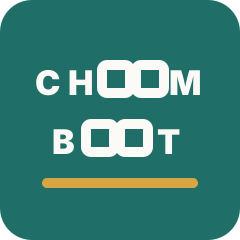

Research Tools
이미지와 그래프를 분석하는 데 필요한 작은 소프트웨어를 만듭니다.

Dancing Brush LabsCreative technology and publication studio
데이터를 읽고, 이미지를 다루고, 연구와 제작 과정을 출판 가능한 형태로 정리하는 작은 실험실입니다.
About
Dancing Brush Labs는 창작과 분석 사이에 있는 작업을 다룹니다. 이미지 처리 도구, 데이터 시각화, 디지털 출판물을 실험하며 결과물이 다시 작업의 기반이 되도록 정리합니다.
Work
이미지와 그래프를 분석하는 데 필요한 작은 소프트웨어를 만듭니다.
실험 과정과 결과를 읽기 쉬운 웹 문서로 정리합니다.
프로젝트별 소개 페이지, 릴리즈 노트, 아카이브를 준비합니다.
Publication
이 저장소는 Dancing Brush 소개 홈페이지와 향후 출판 관련 페이지를 담는 공간으로 사용할 수 있습니다. 정적 HTML로 시작했기 때문에 GitHub Pages 배포도 간단합니다.

Picture Book
낚시에 자신 있던 할아버지가 바다에서 해를 낚으며 벌어지는 상상력 가득한 그림책입니다. 뜨거워진 바다와 곤란에 빠진 동물들을 통해 실수의 결과, 자연과의 균형, 함께 해결하는 힘을 생각하게 합니다.
책 정보 보기